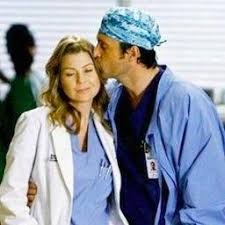

TUDO SOBRE GREYS ANATOMY
Aqui você ficara sabendo de tudo sobre a série e das curiosidades mais chocantes!
Grey's Anatomy é uma das séries de maior sucesso da televisão, criada por Shonda Rhimes e exibida pela ABC desde 2005. A trama gira em torno de Meredith Grey (interpretada por Ellen Pompeo), uma médica residente que, ao longo da série, se transforma em uma das cirurgiãs mais renomadas do mundo. A série se passa no fictício Grey Sloan Memorial Hospital, em Seattle, e é conhecida por seus enredos emocionantes e personagens profundos. A série mistura drama médico com questões emocionais intensas, explorando as complexas relações pessoais e profissionais dos médicos. Desde suas primeiras temporadas, Grey's Anatomy conquistou uma base de fãs leal, graças a tramas inesperadas e ao desenvolvimento de personagens icônicos, como Derek Shepherd (Patrick Dempsey), Cristina Yang (Sandra Oh), e Miranda Bailey (Chandra Wilson). Ao longo dos anos, a série passou por diversas transformações, com a saída de personagens importantes e a introdução de novos rostos, mantendo-se relevante ao longo das 20 temporadas já exibidas e continuando com a renovação da 22ª temporada, prevista para 2025. Apesar de algumas críticas sobre a direção da trama após a saída de grandes nomes, Grey's Anatomy segue sendo um marco cultural, com uma forte presença nas plataformas de streaming. Sua capacidade de lidar com temas sociais, como saúde mental, diversidade e ética médica, contribui para sua popularidade contínua. O futuro de Grey's Anatomy permanece promissor, com os produtores afirmando que a série continuará enquanto houver histórias emocionantes a contar e uma base de fãs dedicada para apoiar sua jornada. Fonte: Cinemablend
CURIOSIDADES:
Origem do Título: O nome da série é uma referência ao livro "Gray's Anatomy of the Human Body", uma renomada obra de anatomia escrita por Henry Gray no século XIX. Escolha da Localização: Inicialmente, a série seria ambientada em Chicago. No entanto, para evitar semelhanças com outra série médica, "ER", que também se passava na mesma cidade, os produtores decidiram mudar o cenário para Seattle Inclusão de Alex Karev: O personagem Alex Karev, interpretado por Justin Chambers, não fazia parte do roteiro original do episódio piloto. Ele foi adicionado posteriormente, e algumas cenas tiveram que ser regravadas ou editadas digitalmente para incluí-lo. Participação Estendida de Addison Shepherd: A personagem Addison Shepherd, vivida por Kate Walsh, foi inicialmente planejada para aparecer em apenas cinco episódios. No entanto, devido à sua popularidade, ela permaneceu por duas temporadas e até ganhou um spin-off próprio, "Private Practice". Referências Musicais nos Títulos dos Episódios: Muitos episódios de "Grey's Anatomy" têm títulos que fazem referência a músicas famosas, incluindo canções de bandas como R.E.M. e The Beatles. Cenas de Cirurgia Realistas: Para aumentar o realismo das cenas de cirurgia, a produção utiliza órgãos de animais, como os de vaca, e sangue falso feito com uma mistura de ingredientes alimentícios. Fãs Ilustres: A cantora Taylor Swift é uma grande fã da série e nomeou um de seus gatos de estimação como "Meredith Grey", em homenagem à protagonista da série Fonte: Cinemablend
TEMAS ABORDADOS
A série aborda diverssos assuntos, entre eles: Amizade e relacionamentos, Luto e superação, Ética médica, Racismo, homofobia e machismo e Pandemia de COVID-19 (abordada na 17ª temporada)
PREMIAÇÕES:
Grey’s Anatomy já ganhou Globos de Ouro, Emmy Awards, People’s Choice Awards, entre outros. Sandra Oh e Katherine Heigl, por exemplo, foram premiadas por suas atuações.


Personagens principais
Grey’s Anatomy é uma intensa jornada de amor, perdas e superações, onde salvar vidas é apenas parte do desafio.
Saiba maisPor que a série é tão amada?
“Temos que continuar respirando, porque amanhã o sol vai nascer e quem sabe o que a maré pode trazer.”
Saiba maisO que é Grey’s Anatomy?
“Não é sobre o quão duro você bate. É sobre o quanto você aguenta apanhar e continuar seguindo em frente.”
Saiba mais
Derek e Meredith
O relacionamento deles é um dos pilares emocionais da série, especialmente nas primeiras temporadas, e ficou marcado por muitos altos e baixos, drama, paixão e tragédia.
Saiba mais